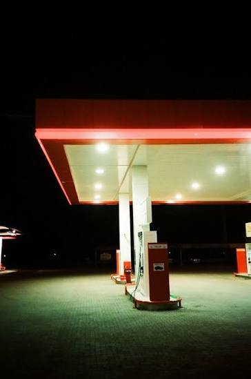

03 / DOWN · یادداشت Energy Notes
وقتی بنزین گران میشود، رفاه کجا میرود؟
روایتی از مطالعهای دربارهٔ تقاضای بنزین در ایران که میان اثر مستقیم افزایش قیمت و اثر همزمان درآمد و اقتصاد کلان فرق میگذارد.

از صف پمپبنزین تا صورتحساب دولت
مجید احمدیان، مونا چیتنیس و لستر هانت بحث را از یک ناهماهنگی ساده شروع میکنند: در ایران، مصرف بنزین از تولید جلو زده بود. سالهای میلادی مقاله در این روایت برای خوانایی با معادل رایج شمسی آمدهاند. از سال ۱۳۶۰ به بعد، تولید داخلی دیگر جوابگوی مصرف نبود و فاصله با واردات پر میشد. نسبت تولید به مصرف که در سال ۱۳۴۷ حدود ۳٫۲۵ بود، در سال ۱۳۸۱ به حدود ۰٫۷۶ رسید.
قیمت پایینِ تعیینشده از سوی دولت، این فاصله را پنهان میکرد. دولت بنزین را با قیمت جهانی وارد میکرد و آن را همراه با تولید داخلی، ارزانتر از هزینهٔ تأمین در بازار داخل میفروخت. در نتیجه، بخشی از هزینه در جای دیگری دیده میشد: در بودجهٔ واردات، در درآمد صادراتیِ از دسترفته و در مصرف سوختی که آلودگی بیشتری ایجاد میکرد. نویسندگان اثر آلودگی را مهم میدانند، اما آن را در محاسبهٔ اصلی خود وارد نمیکنند.
سؤال مقاله چیست؟
نویسندگان علاوه بر مقدار کاهش مصرف، اثر این تغییر قیمت بر رفاه اجتماعی را هم میسنجند؛ یعنی هزینه و منفعت آن میان مصرفکننده، تولیدکننده و دولت چگونه پخش میشود.
برای این کار، رفتار بازار را با دادههای سالانهٔ ۱۳۴۷ تا ۱۳۸۱ برآورد کردهاند و تغییر رفاه بین سالهای ۱۳۸۲ و ۱۳۸۳ را سنجیدهاند. در این روایت وارد جزئیات مدلهای سری زمانی، وقفهها و آزمونهای آماری نمیشویم. کافی است بدانیم مقاله تلاش میکند واکنش کوتاهمدت و بلندمدت تقاضا را از هم جدا کند و بعد، نتیجه را در دو قاب ببیند.
قیمت فوراً مصرف را عوض نمیکند
برآورد مقاله برای کشش قیمتی کوتاهمدت حدود منفی ۰٫۱۹ و برای بلندمدت حدود منفی ۰٫۷۴ است. به زبان ساده، در چارچوب همین مطالعه، افزایش ۱۰ درصدی قیمت با کاهش تقریبی ۱٫۹ درصدی مصرف در کوتاهمدت همراه میشود. در بلندمدت، وقتی مردم فرصت بیشتری برای تغییر خودرو، مسیر رفتوآمد یا عادت مصرف دارند، کاهش برآوردشده به حدود ۷٫۴ درصد میرسد.
این اعداد یک نکتهٔ مهم دارند: تقاضای بنزین در هر دو افق زمانی کمکشش است، اما زمان واکنش را نباید حذف کرد. پمپبنزین همان روز تغییر میکند، تصمیم خانوارها و بنگاهها با فاصله ظاهر میشود.
درآمد هم در داستان حضور دارد. کشش درآمدی کوتاهمدت حدود ۰٫۳۲ و بلندمدت حدود ۱٫۲۵ برآورد شده است. یعنی رشد درآمد در بلندمدت میتواند تقاضا برای بنزین را بیش از تناسب بالا ببرد. برای همین، قیمت بهتنهایی مسیر مصرف را تعیین نمیکند.
دو قاب برای دیدن رفاه
نویسندگان اثر سیاست را در دو حالت جدا میکنند. در قاب اول، فقط قیمت بنزین تغییر میکند و متغیرهای دیگر ثابت میمانند. این همان چیزی است که میتوان آن را اثر خالص افزایش قیمت دانست. نتیجه در این قاب منفی است: زیان مصرفکننده از منفعت تولیدکننده بزرگتر برآورد میشود و حاصل کلی به سمت کاهش رفاه میرود.
در جدول مقاله، سهم نسبی تغییر رفاه در این حالت برای مصرفکننده منفی ۱۳۷٫۴، برای تولیدکننده مثبت ۳۷٫۴ و برای رفاه اجتماعی منفی ۱۰۰ گزارش شده است. این اعداد درصد تغییر قیمت یا درصد جمعیت نیستند؛ سهمهای نسبیِ اجزای تغییر رفاهاند.
قاب دوم، سال واقعی را همانطور که رخ داده نگاه میکند. در این حالت، درآمد، شاخص قیمتها، روند تقاضا و مقدار عرضه هم تغییر میکنند. نتیجه برعکس میشود: سهم مصرفکننده مثبت ۹۶٫۳، سهم تولیدکننده مثبت ۳٫۷ و تغییر کلی رفاه اجتماعی مثبت ۱۰۰ برآورد شده است.
این دو نتیجه از دو سؤال جدا میآیند. اگر فقط قیمت را بالا ببریم، فشار مستقیم بر مصرفکننده غالب است. اگر افزایش قیمت همزمان با رشد درآمد و تغییرات اقتصاد حرکت کند، اثرهای دیگر میتوانند آن فشار را جبران کنند.
چرا زمان سیاست مهم است؟
از نگاه این مقاله، زمان اجرای سیاست بخشی از خود سیاست است. وقتی درآمد در حال رشد است، تقاضا ظرفیت بیشتری برای جابهجایی دارد و اثر کلی افزایش قیمت میتواند با آنچه از نگاه یک مصرفکننده در جایگاه سوخت دیده میشود فرق کند. به همین دلیل، نویسندگان دورهٔ رشد اقتصادی را برای اجرای قیمت بالاتر مناسبتر میدانند.
این نتیجه را باید در قاب تاریخی خودش خواند. دادههای اصلی تا سال ۱۳۸۱ میرسند و محاسبهٔ رفاه برای ۱۳۸۲ و ۱۳۸۳ انجام شده است. مقاله دربارهٔ امروز ایران پیشبینی مستقیم ارائه نمیدهد. همچنین، اثر آلودگی، تغییرات فناوری خودرو، کیفیت حملونقل عمومی و بسیاری از واکنشهای سیاسی بیرون از محاسبهٔ اصلی ماندهاند.
خوانش کوتاه
در این مطالعه، بنزین به واردات، بودجهٔ عمومی، درآمد خانوار و رفتار مصرفی وصل میشود. مطالعهٔ احمدیان، چیتنیس و هانت نشان میدهد که پاسخ به یک سؤال اقتصادی، به قاب سؤال بستگی دارد: اثر خودِ افزایش قیمت را میسنجیم یا تمام تغییراتی را که همزمان با آن رخ دادهاند؟
در این روایت، جزئیات روش برآورد را کنار میگذاریم و روی رفتوبرگشت میان دو قاب تمرکز میکنیم: فشار مستقیم قیمت میتواند رفاه مصرفکننده را کم کند، اما نتیجهٔ نهایی به درآمد، روند تقاضا و شرایطی بستگی دارد که سیاست در آن اجرا میشود.
منابع این روایت
- Gasoline Demand, Pricing Policy and Social Welfare in the Islamic Republic of Iran OPEC Review · paper
- Gasoline Demand, Pricing Policy and Social Welfare in Iran Surrey Energy Economics Centre · pdf